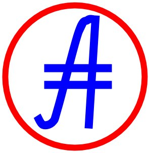

Kaggle (расчёт): https://www.kaggle.com/code/eavprog/abscur2
Книга (данные): https://docs.google.com/spreadsheets/d/1azH80JUolc4whN_Uu3Myrrsyv1nEScJ8LK1Lecn0uH4/edit#gid=449604484
Блог (новости): http://www.abscur.ru
Сайт (демонстрация): https://prog815.github.io/abscur2
ВКонтакте (обсуждение): https://vk.com/abscur
WhatsUp (новости): https://chat.whatsapp.com/KrNJXAKizPxDlDSjYfdpQs
Viber (новости): https://invite.viber.com/?g2=AQB63y7Cm%2BNJK0tNZW%2F9kI00M6Wr8HuZ7XeamzN4jZCve8Aq9%2FiD3DY56Eqcf7dc
Telegram (обсуждение): https://t.me/AbsCur
Одноклассники (обсуждение): https://ok.ru/group/53547043520717
GitHub (код): https://github.com/prog815/abscur
YouTube (новости): https://www.youtube.com/@eavprog8/community
Smart-lab (обсуждение): https://smart-lab.ru/my/eavpred/
VC (обсуждение): https://vc.ru/u/262921-aleksey-enin

Зеркала на www.abscur.ru и на prog815.github.io